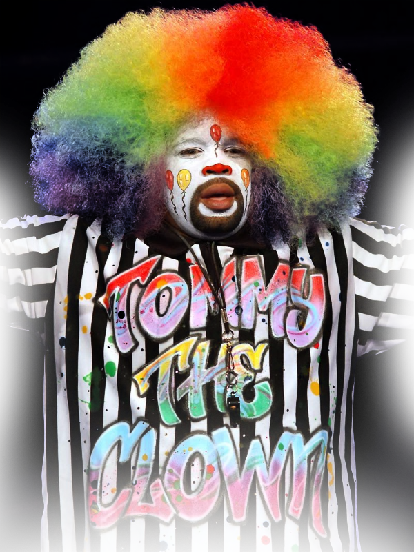

크럼프의 시작, 클라우닝
50년도 채 되지 않아 비교적 짧은 크럼프의 역사는 다름아닌 한 광대로부터 시작되었다.
TOMMY THE CLOWN
1990년대 초 로스엔젤레스 사우스 센트럴에는 마약, 빈곤, 폭력, 범죄가 셀 수 없이 발생하고 있었다.
그러던 와중 마약 딜러였던 토미 더 클라운(TOMMY THE CLOWN)이 가혹한 환경에서 힘겹게 살아가는 아이들을
기쁘게 하기 위해 광대 분장을 하고 클라운 댄스(Clown Dance)를 선보였다. 이 클라운 댄스가 큰 인기를 끌며
아이들은 물론 성인들도 이 춤을 따라 추기 시작했다.

위험하고 거친
범죄의 삶 대신
'춤을 춘다'라는
새로운 선택지로.